Working drafts and Spatial Library
Actual authenticated application · production candidate b620dc162c39 · 10 browser journeys · synthetic unpaid fixtures. Saved/working identities, independent environments, versions, collections and recovery. This review establishes neither room-photo accuracy nor physical AR or owner acceptance.
Source and artifact receipt
Collection Library
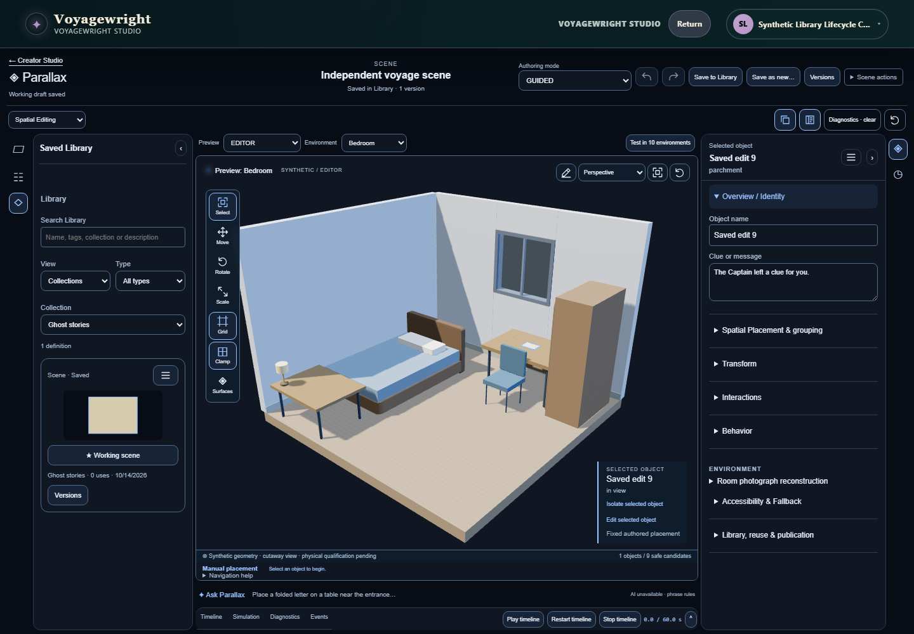
Environment Definition Laptop
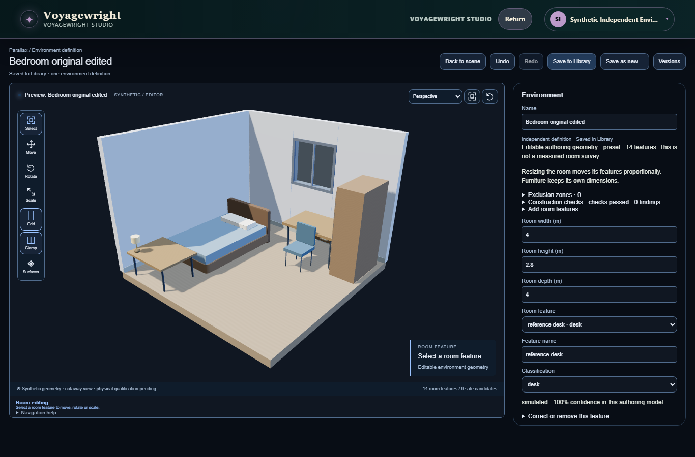
Environment Definition Phone
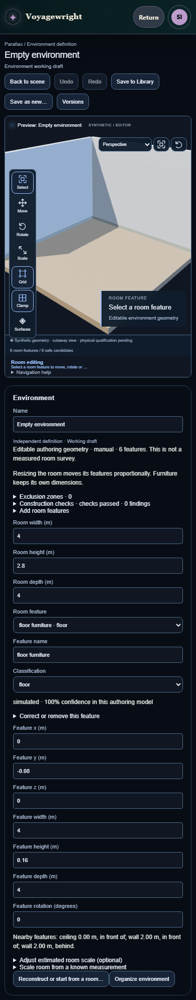
Environment Library Phone
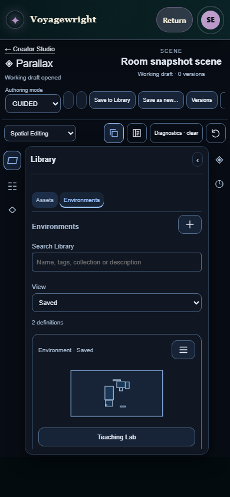
Environment Library Restored Preserved Scene
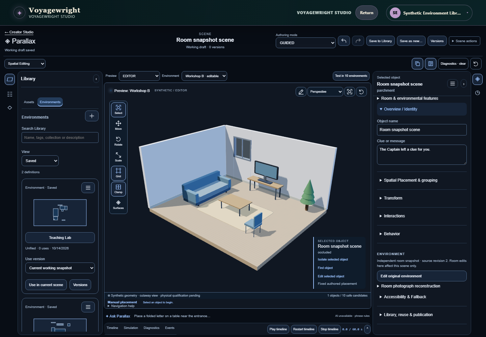
Environment Setup Choices
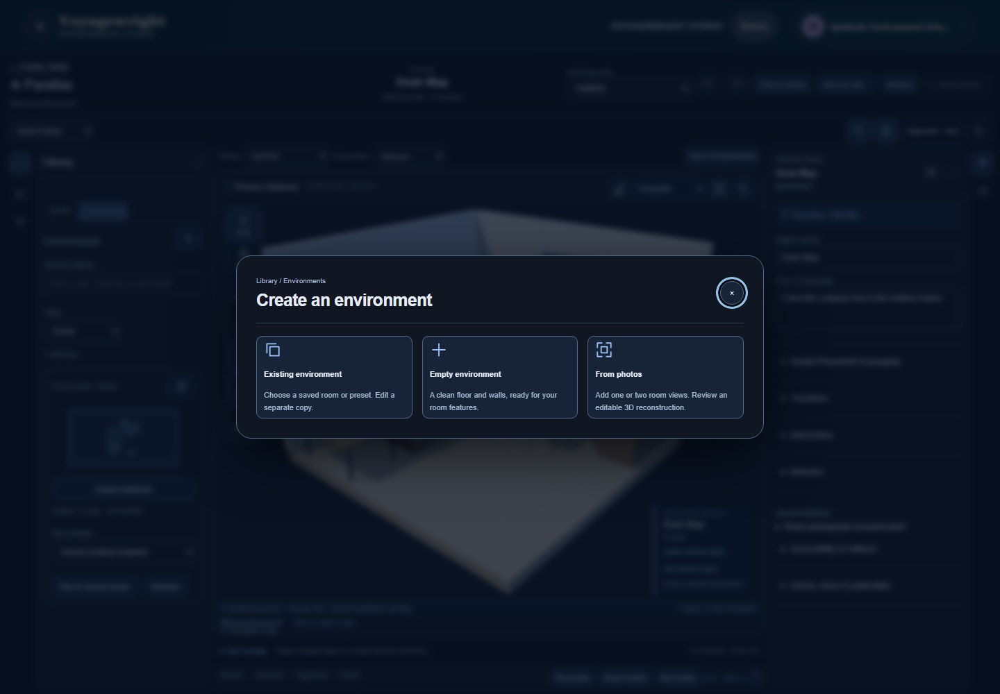
Environment Setup Empty Editor
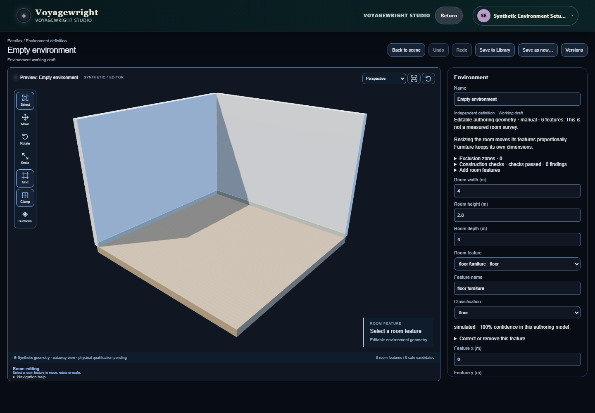
Library Archived Definition
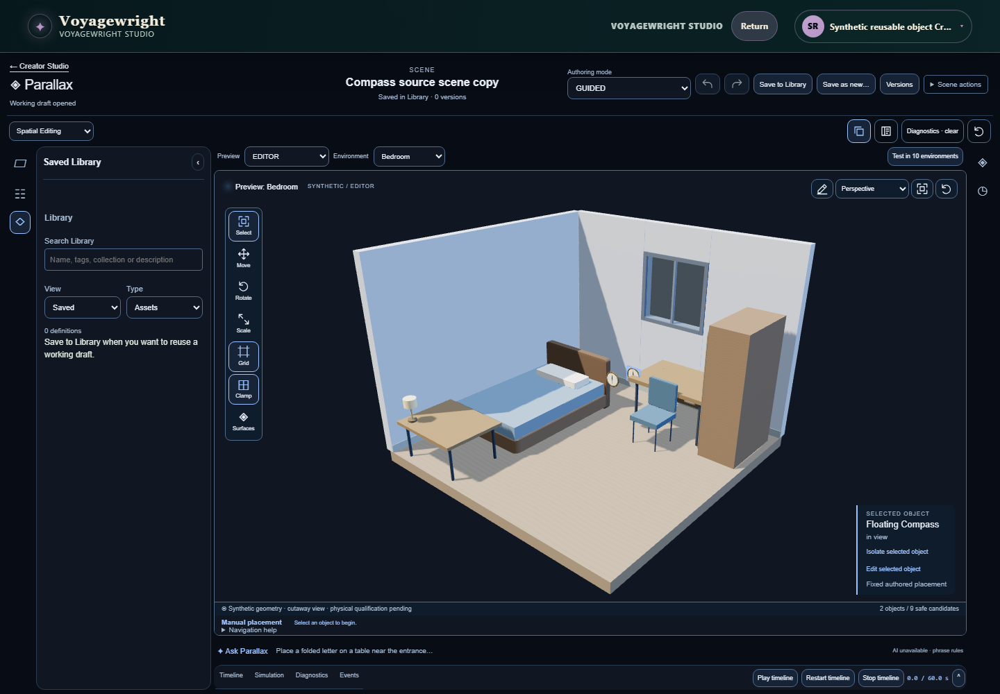
Library Object Definition
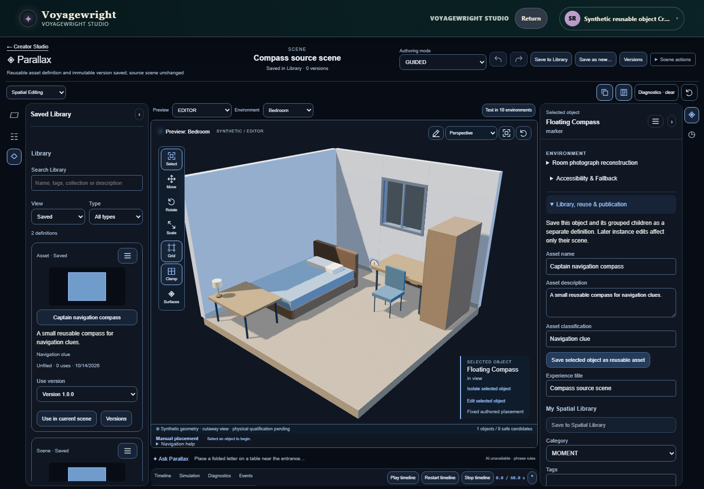
Library Open Definition
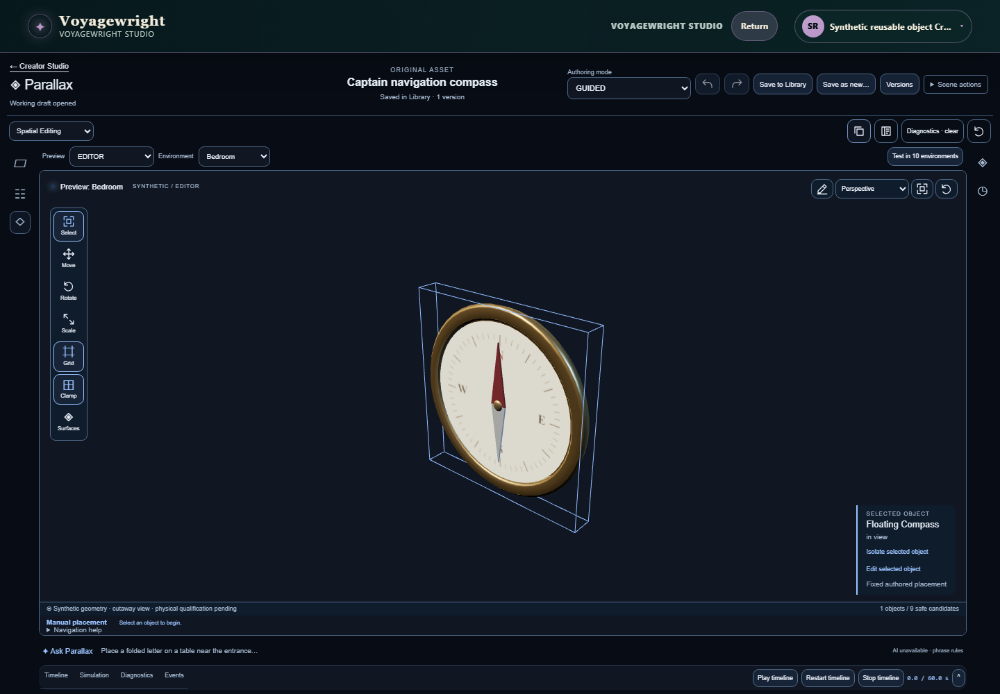
Library Placed Instance
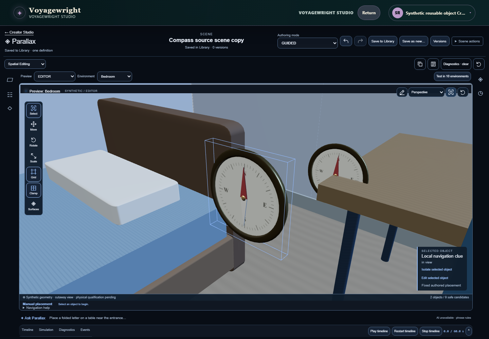
Typed Library Desktop Dark
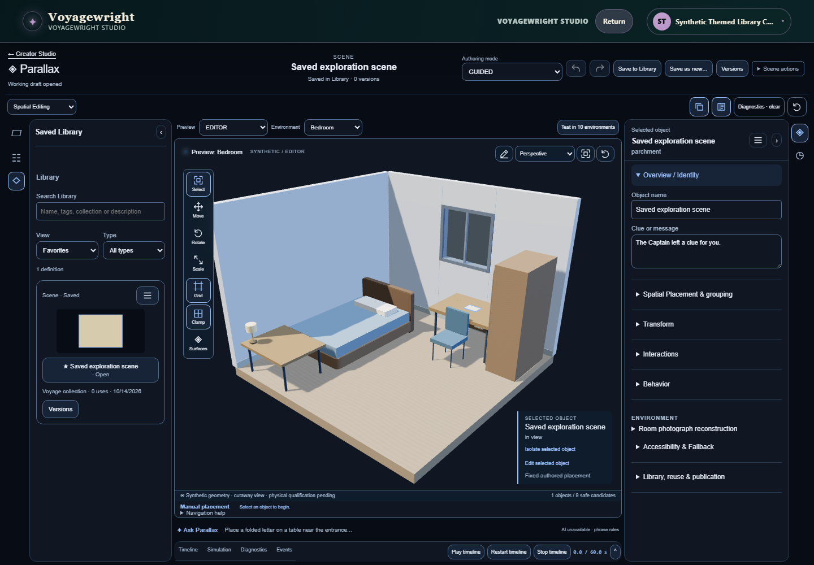
Typed Library Laptop Light
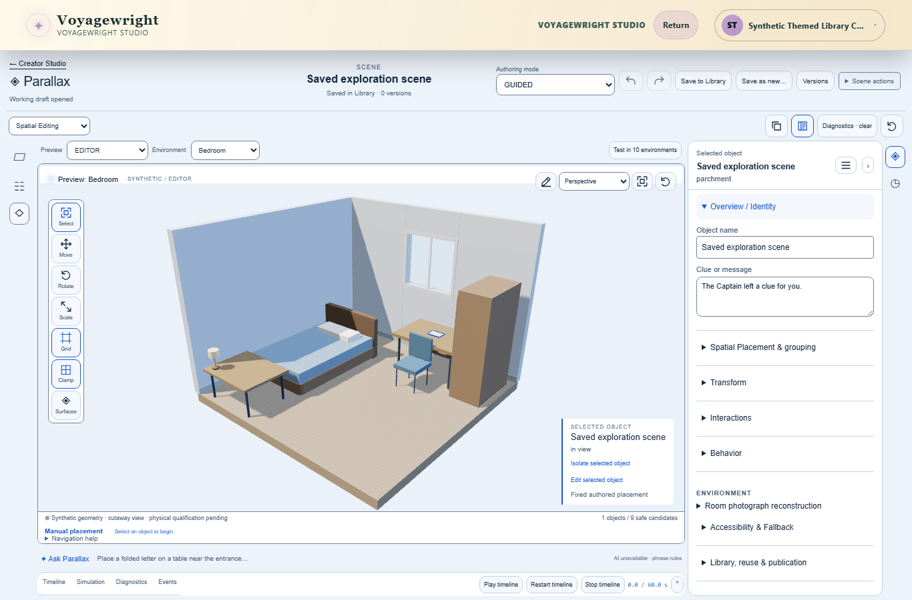
Typed Library Phone Light
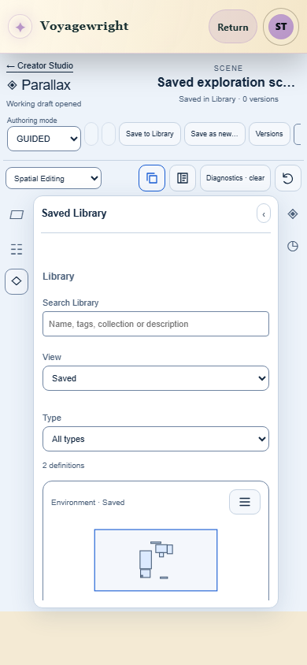
Version Preview Desktop
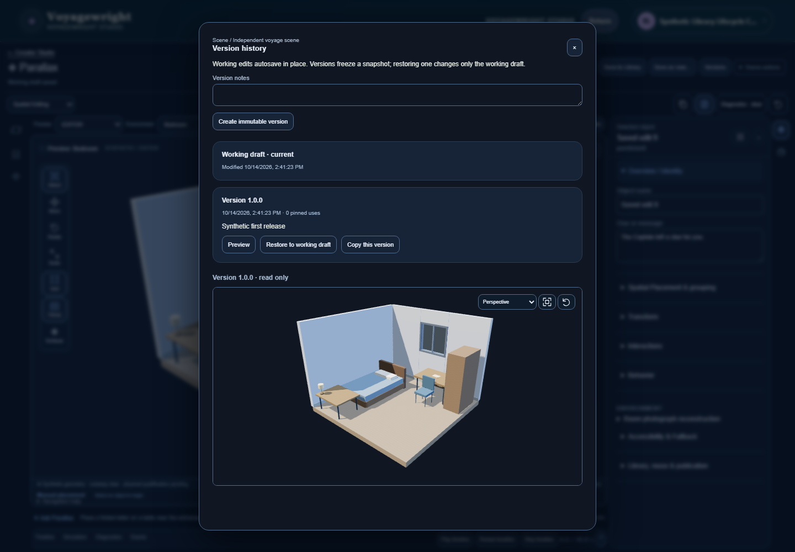
Recorded journey
parallax-environment-entry-5d20a-e-and-starts-an-empty-shell-chromium-video.webm
Recorded journey
parallax-environment-libra-e13e5--preserving-scene-snapshots-chromium-video.webm
Recorded journey
parallax-library-lifecycle-291af-etadata-and-version-history-chromium-video.webm
Recorded journey
parallax-library-lifecycle-3bbd1-sive-and-keyboard-reachable-chromium-video.webm
Recorded journey
parallax-library-lifecycle-4e27a-inition-and-visible-failure-chromium-video.webm
Recorded journey
parallax-library-lifecycle-77052-flicting-edits-deliberately-chromium-video-1.webm
Recorded journey
parallax-library-lifecycle-77052-flicting-edits-deliberately-chromium-video.webm
Recorded journey
parallax-library-lifecycle-a1739-or-a-newly-selected-version-chromium-video.webm
Recorded journey
parallax-library-lifecycle-ebee8-ginal-CAS-base-after-reload-chromium-video.webm
Recorded journey
parallax-library-lifecycle-f97ed-nufacture-scene-definitions-chromium-video.webm
Recorded journey
parallax-reusable-assets-C-b792c-es-the-unchanged-definition-chromium-video.webm